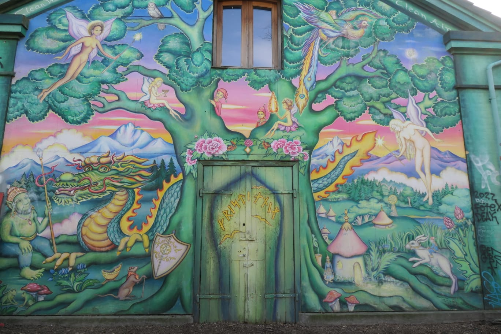

Ce matin, nous sommes parties de chez Clara avec comme premier objectif voir la relève de la garde devant la résidence du roi à 11h30. Sauf que l'importance de cette cérémonie dépend de si le roi est là où pas, si il est là celà est fait en fanfare mais sinon il n'y a presque rien à voir...
Heureusement, grâce à la souris peut-être, nous avons pu voir la cérémonie avec la fanfare et c'était vraiment bien ! En plus on a eu de la chance avec le temps, il a fait super beau ! Un grand ciel bleu qui réchauffe malgré le froid danois.
La place du palais royale est en fait délimitée par 4 palais identiques dont 3 sont occupés par la famille royale et le dernier est un musée.
Nous sommes ensuite allées dans la marmorKirke qui est le plus grand dôme de scandinavie !
Après une petite pause déjeuner à manger des Smørrebrød (des tartines au pain noir et hareng pour Alessia et moi), nous sommes allées voir la statues de la petite sirène en passant par Kastellet, en forme d'étoile, cette île abrite une base militaire au milieu de pelouse.
La petite sirène a été faite d'après le conte (et non l'inverse) avec pour modèle le corps de la femme du sculpteur. Elle mesure 1m25, pas bien impressionnant donc, mais sympa.
Nous avons ensuite de nouveau marché jusqu'au jardin du château de Rosenborg.
La dernière étape du jour était Nyhavn, LA vue carte postale de Copenhague. Super jolie surtout avec le soleil sur les maisons colorées !
Pour cette deuxième journée, nous avions pour ambition de visiter le quartier jaune du routard. Cela correspond au quartier autour du château de Christiansborg. Nous sommes tout d'abord allées voir l'église Holmens qui était avant d'être une église un atelier de fabrication d'encre pour bateau. C'est ici que c'était marié l'ancienne reine et son mari français. Nous avons ensuite marché le long du canal avant de nous poser en face du château pour manger nos délicieux sandwichs au hareng et curry (c'est ironique, personne ne les a finis). Nous sommes ensuite allées nous balader dans les rues commerçantes en attendant de savoir si Clara allait nous rejoindre ou pas. Nous avons notamment "visiter" le magasin Søstrene Grene et le magasin Lego (celui ci avait Nyhavn construit en Lego à l'intérieur !)
Clara ne pouvait finalement pas nous rejoindre alors nous sommes allées en haut de la tour du château d'où nous avions une vue sur tout Copenhague et même sur la Suède ! (Une tour blanche qui tourne dans les photos)
Du haut, nous avons vu la bibliothèque royale où nous allions après, c'est un joli bâtiment qui nous a beaucoup plu !
Aujourd'hui, Jules (un ami de centrale Marseille) arrivait à Copenhague, nous l'avons donc retrouvé à Christianshavn pour aller visiter le quartier de Christiana.
Ce quartier, est connu pour son trafic de drogue. Il a été plus ou moins indépendant du Danemark pendant 30 ans : c'est une ancienne base militaire et lorsque l'armée l'a abandonné, des jeunes sont venus squatter pour y créer une forme de vie alternative et l'état va même jusqu'à reconnaître la ville libre de Christiana pour 3 ans (une sorte d'expérience sociale).
Finalement, c'est seulement en 2012 qu'un accord est trouvé pour que la ville redevienne un quartier de Copenhague. En échange, les habitants ont négocié de pouvoir racheter leur ville pour 10,2 millions d'euros.
On s'est donc baladé dans ce quartier et Clara a trouvé cela très différent de la dernière fois qu'elle était venue lors de laquelle, il y avait des stands de drogues partout alors que nous n'en avons pas vu plus de 5 (les photos étaient interdites à cet endroit).
Nous nous sommes ensuite un peu baladés sur une route faisant penser à la campagne avant de revenir dans le centre et de repasser par Nyhavn puis le quartier latin, l'hôtel de ville et enfin le parc Tivoli (un grand parc d'attractions fermé en hiver).
